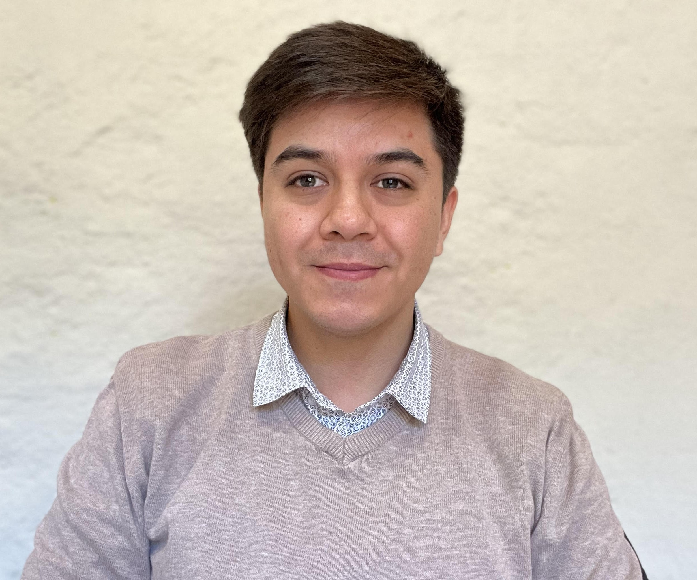

Carabineros de Chile
Asesor en gestión de personas
Trabajo en iniciativas de inducción, retención y análisis de información del personal civil, junto con la coordinación y seguimiento de procesos.
Administrador público · Universidad de Chile
Trabajo con personas,
procesos y tecnología.
Me interesa entender cómo funcionan las organizaciones y construir soluciones que hagan más fácil el trabajo de las personas.

Gestión de personas / Coordinación de proyectos / Desarrollo web
Iniciativas propias y aprendizajes construyendo para la web.
Un punto de encuentro entre oportunidades laborales y personas que buscan su próximo paso.
Asesor en gestión de personas
Trabajo en iniciativas de inducción, retención y análisis de información del personal civil, junto con la coordinación y seguimiento de procesos.
Coordinador de proyectos
Coordinación de proyectos y actividades formativas, conectando las necesidades de las personas con la ejecución de iniciativas.
Universidad de Chile
Formación en Desafío Latam
Excel · HTML y CSS · WordPress · Moodle · Laravel · React
Las uso según las necesidades de cada proyecto y continúo aprendiendo con la práctica.
¿Tienes un proyecto o una oportunidad para compartir?
Conversemos en LinkedIn ↗kvargas@empleoschoapa.cl ↗